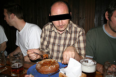
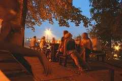
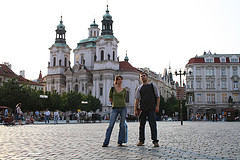
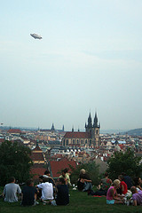

Praha Romantická
Osam razloga zašto volim Prag, i zašto se radujem svakom novom odlasku.
PIVO
iz prostog razloga što, gde god da se u Češkoj nađeš, nemoš se zajebat. Tamo se čak i lokalni pijanci nalivaju kvalitetnim pićem. Moje omiljeno je Plzenska dvanacka (Pilsner Urquell). U najdražoj kafani toče još i Gambač destku (Gambrinus). Ove cifre - 12 i 10 - odnose se na jačinu piva. Dvanacka ima 5% alkohola, a desecka oko 4%. Postoje i neke varijante za devojčice, ali ih nisam probao. Probao sam joše neke vrste piva (Velkopopovicky Kozel; Radegast; Budějovický Budvar) i nema se šta kasti - sva su odlična.
LOKALNE KAFANE
Uvek odsedamo u istom delu grada (Hanspaulka, Praha 6) i uvek posećujemo dve-tri lokalne kafane. O jednoj sam (Restaurace na Hanspaulce) već opširno pisao onomad. To je najobičnija kafana u predgrađu, pa ipak! dnevni meni je korektan, obroci obilni, ekipa raznovrsna. To je zapravo stvar koja mi se najviše dopada u ovim lokalnim birtijama - ljudima koji izlaze ovde zajedničko je samo to da žive negde u blizini. Ekipe mladih od petnaestak godina ili pripitih starkelja od 70ak sede jedna do druge. Muško, žensko, siromašno, ludo, mlado, lepo, debelo... svega ima. Često se na velikom platnu gleda fudbal ili hokej... Pravo mesto za popiti dva-tri piva i zapaliti u grad.
GRADSKI PREVOZ
To je valjda stvar koja se podrazumeva da će šljakati kako treba, ali ja moram da naglasim savršenu pravilnost koja javni transport odlikuje. Iako je ta naša Hanspaulka poprilično daleko od centra, ništa lakše od odlaska u grad. Busom do Hradčanske, prestup na metro A, onda umilni ženski glas izgovara ono čuveno "Okončajte prosim vstup i nastup, dverže se zaviraju" i posle par minuta već si na Staromesckoj ili na Musteku. Jedna sedmodnevna karta u džepu važi za sve vrste prevoza. Ne treba vam povlastica za koju treba slika, izvod iz matične knjige rođenih, obrazac ŠV20, uzorak krvi...
USER FRIENDLINESS
Zamislimo jednu mamu sa kolicima koja sa Banovog Brda gradskim prevozom treba da stigne do Trga Republike za dvadest minuta. Takva fina gospođa mora da zaobiđe parkirana kola na trotoaru, savlada pola tuceta višedecimetarskih denivelacija, nekako ugura kolica u tramvaj... Anything goes. Ali, ne i u Pragu - tu su svi prelazi, prolazi i trotoari prilagođeni onima za koje su i smišljeni - pešacima. U niskopodni autobus kolica ulaze sa iste kote trotoara, čeka ih rezervisan prostor (mama sedne), u metrou ponegde ima i liftova. Klupe su na svakom koraku, stogodišnje krošnje još češće, malo-malo pa park ili bar ozelenjeni skverić. Vrlo udobno!
SHOPPING
Gospođa sa kojom radimo u Pragu se čudila kad smo rekli da planiramo šoping. Kaže, nije vam Prag najbolje mesto za to - pravi šoping možete obaviti u Parizu, Londonu, Njujorku. Pa, sigurno da je tako, ali ovde ima ta ulica Na Příkopě, na Vaclavskim namjestima, gde su smeštene sve ogromne radnje - od H&Ma, preko Zare i Manga, do Bate u blizini. Dovoljno za celodnevni provod. Posebno ovih dana, kada su popusti ponegde i 70%.
NOĆ
Hradčani i Mala strana sa leve strane reke osvetljeni su tako da do izražaja dolaze različiti planovi kompozicije; slično je i sa druge strane gde na trgu Staroměstské náměstí dominira Tynska crkva, a na Vaclavskim Narodni muzej. Jednostavno, ogromna kinta je uložena u osvetljenje zgrada, trgova, mostova i to se više nego vidi. Pre neko veče sedeli smo pored Vltave, gledali prema Hradčanima, i meni se nekako prikladnim učinilo da se na nebu iznad desi vatromet. Ovog leta i Prag je doživeo rekordne vrućine (36,4 step. C je 145togodišnji rekord), pa je tek noću prijatno. Isuviše prijatno čak.
RAZNOVRSNOST
Iako sam u Pragu bio preko deset puta, uvek ima nešto novo da se vidi. Osim tog srednjevekovnog, starog dela grada, zatim Hradčana i Male strane, u Pragu ima i baroka, klisicizma, secesije, kubizma, moderne i postmoderne. Ponekad je najbolje lutati - izađeš iz metroa stanicu pre (ili posle) uobičajene, i prikazuje se grad koji živi normalan život neblokiran turistima (kao u samom centru). Tako vam se može desiti da naletite na prodavnicu belgijskih bombona, egzotičnih čajeva ili mirišljavog duvana. Pojaviće se sasvim neočekivano neka zgrada iz X veka, ili ćete sesti u kafe sa pogledom na plesnu dvoranu iz perioda Fien de Sieclea.
MEDOVNIK
Još jedna stvar: kad se nađete u Pragu/Češkoj, obavezno probajte medovnik. Ima ga u skoro svakom restoranu, ali se ne može naći u slobodnoj prodaji. To je jedan savršen kolač, reći ću i završiti ovaj post.
 RSS feed
RSS feed
 sadržaji se objavljuju pod
sadržaji se objavljuju pod